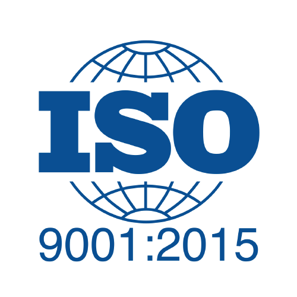

Despre Noi
Navirex SRL, cu sediul în Constanța, este un lider în producția de servicii și echipamente destinate domeniului naval. Compania, certificată ISO 9001:2015, se remarcă prin oferirea de soluții tehnice avansate și personalizate pentru nave de navigație interioară, respectând cele mai stricte reglementări europene și asigurând standarde de excelență.

Servicii și competențe
- Proiectare tehnologică, construcție, montare și punere în funcțiune a echipamentelor electrice terestre și navale
- Proiectare tehnologică și confecționare de subansamble electronice
- Instalare de echipamente și subansamble de automatizare
- Modernizare de echipamente electrice și automatizare
- Confecționare de trasee electrice de medie și joasă putere
- Construcție de tablouri și elemente de măsură și semnalizare
- Lucrări de reparații instalații electrice la nave și verificarea rezistenței de izolație
- Lucrări de reparații instalații de automatizare la nave si verificări AMC-uri electrice si mecanice
- Lucrări de reparații și întreținere instalații de semnalizare și avarie
- Lucrări de reparații și întreținere instalații radio și telefonie
- Verificarea releelor termice si electromagnetice ale întrerupătoarelor automate tip USOL 100, 250, 500 (630) A
- Verificarea și reglarea releelor termice tip TSA cu truse de curent
- Verificarea protecțiilor termice și electromagnetice pentru întrerupători automați cu trusa de curent
- Verificarea presostatelor și termostatelor cu trusa de presiune și temperatură
- Lucrări de reparații instalații și tubulatură - instalații sanitare și termice, instalații de apă potabilă, instalații de apă menajeră, instalații de balast
- Lucrări de mecanică și lăcătușerie ușoară
- Reparații motoare și diesel generatoare, mecanisme de propulsive, instalații de punte și instalații hidraulice navale
- Montaj și service la indicatoarele vitezei de girație de la bordul navelor fluviale
- Execuția iluminatului de joasă înălțime la bordul navelor de pasageri
- Montaj și service la sistemul de lumini de navigație la navele maritime și fluviale
Contact
Constanța, Str. I.L.Caragiale, nr. 2A, bl. L112
CIF: RO2742456
J13/5703/1992